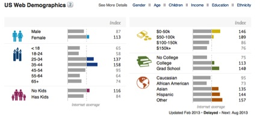

The primary intent of the site is to encourage visitors to purchase class cards. Its secondary objectives are to entice visitors to sign up for the newsletter and provide information to the users about the activity.
User goals of the site are to discover and learn more about flying trapeze classes and circus arts.
The goal of the redesign is to present the content in a more appealing and efficient manner. I will also introduce an option for a social space and also for merchandise.
I also plan on presenting the classes in a tiered format to encourage user to return.
| Competition | Ranked | Linked Sites |
|---|---|---|
| www.phillycircus.com | 12,437,296 | 50 |
| http://newyork.trapezeschool.com | 512,007 | 389 |
| http://www.circusnyc.com | 7,028,079 | 19 |
Reference: http://www.alexa.com
Demographic Information is only available for TSNY.
Reference: https://www.quantcast.com
None of the sites utilize keywords or Meta data for SEO. The main demographic is a collage-educated woman between the ages of 25-35. A secondary demographic is a vacationer looking for activities that they cannot normally do. TSNY does a very good job by linking with travel sites as well as local hospitality businesses.
Karen is a single female who graduated college five years ago. She previously played sports and is looking for ways to stay active. She is interested in new and unusual activities and meeting new people.
Bob is a 40-year-old Accountant on vacation with his wife and two kids. He is looking for activities for his family that they would enjoy and make their vacation memorable.